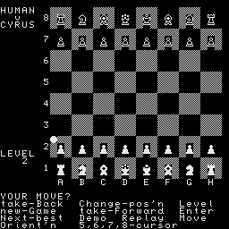

wie [40140c5896bab22433ff637216165bf0]=A2 Variante?,
aber wahrscheinlich für den Original-Monitor
***************************************************************
CYRUS - Beschreibung
--------------------
Version : CYRUS V.2/dt.
Lage : 100H - 41E6H / 3FF0H >CRC=FEE6
Start : 3FF0H
Partie :
Lage : B0H - 41E6H
Start : 40AFH
Nach dem Kaltstart wird das Programm auf B0H umgeladen.
Durch ^C erfolgt ein Sprung zur eingebundenen Save-Routine.
Damit ist das Saven einer Partie moeglich, die spaeter wieder in
den Rechner geladen werden kann. Nach dem Saven wird der Zusatz-
sprungverteiler ab B0H wieder initialisiert.
Von 4000H - 41E6H sind u.a. die Save- und Load-Routinen.
Kommandos
---------
Kommandos werden durch die angegebenen Grossbuchstaben aufge-
gerufen. Erlaeuterungen der Kommandos sind in deutsch eingetra-
gen.
1. Spielmodus (Grundmenue)
--------------------------
L=Stufe : Spielstaerke
Durch Taste L von 1 bis 8 einstellbar. Es fol-
gen P1-P3. Sie dienen der Schach-Matt-Suche bei
Problem studien. Aufbau der Studien im
Modus >AENDERN/PROBLEM<.
Im Grundmenue durch >M=Zug< oder durch >D=Demo<
Matt suchen lasssen. Wenn Matt gefunden wurde,
evtl. die Zuege durch >R< anzeigen lassen.
G=Neu? : mit Abfrage Ja/Nein = Y/N neues Spiel.
M=Zug : mehrfach einsetzbar
- Problemstudie
- Matt-Suche
- Farbwechsel (Grundeinstellung ist weiss fuer
den Spieler)
O=Seitenwechsel: Brett auf dem Bildschirm drehen
N=Zugvorschlag: Anzeige des naechstbesten Zuges von CYRUS, wenn
der gespielte unguenstig erscheint.
R=ab Beginn : Bisher gespielte Zuege werden angezeigt
(beliebige Taste = Abbruch. Weiterspiel an die-
ser Stelle moeglich, oder durch >F=vorw.<
1/2- zugweise weiter anzeigen)
B=rueckw. : jeweils 1 Halbzug zurueck
F=vorw. : jeweils 1 Halbzug vorwaerts
D=Demo : CYRUS spielt allein. Abbruch durch beliebige
Taste. Dann ist das Weiterspiel moeglich.
W=Tag : Eingabe des Datums in beliebiger Form (wird mit
abgespeichert).
S=Ton : Schalter fuer Signalton ueber TBG.
^N (CTRL N) : Eingabe des Namens des Spielers (17 Zeichen)
(wird mit gespeichert)
AENDERN/PROBLEM: Untermenue
---------------------------
leer: A oder U
A=Brett : leeres Brett fuer Problemaufbau
U=Feld : Feld unter Cursor wird frei
T=Farbe : - Farbwechsel fuer Figuraufstellung
- Farbwechsel zum Weiterspielen
nach >E=spielen<
G=Neu? : wie im
O=Seitenwechs.: Spielmodus
E=spielen : Rueckkehr in das Grundmenue
** setzen von Figuren **
Das Feld braucht nicht geloescht zu werden. Es wird die ge-
wuenschte Farbe der Figur eingestellt, der Cursor auf das ent-
sprechende Feld positioniert und eine der folgenden Tasten ge-
drueckt:
P : Bauer
N : Springer
B : Laeufer
R : Turm
Q : Dame
K : Koenig
** Cursorfunktionen **
5 o. <-- : links
8 o. --> : rechts
6 o. ab : abwaerts
7 o. auf : aufwaerts
Wenn im Spielmodus >E< gedrueckt wird, koennen 2 Spieler gegen-
einander spielen. CYRUS fungiert dann als Schiedsrichter. Rueck-
schalten dieser Spielform durch >C=AENDERN/PROBLEM< und an-
schliessend gleich >E=spielen< .
Spielen:
--------
Mit >L< die Spielstaerke einstellen. Evtl. im Untermenue den
Farbwechsel ausfuehren. Den Cursor auf das Figurenfeld setzen
und >ENTER<. Den Cursor auf das Zielfeld und >ENTER<. Der ange-
gebene Zug wird ausgefuehrt.
Danach berechnet CYRUS seinen Zug.
Jede Spielfunktion kann durch eine beliebige Taste abgebrochen
werden und somit CYRUS zur Sofortausgabe seines bis dahin opti-
malen Zuges gezwungen werden.
Erreicht ein Bauer die Grundlinie, so wird nach der Figur ge-
fragt, in die der Bauer gewandelt werden soll. CYRUS wandelt
seinen Bauern selbstaendig.
Rochade: mit Cursor den Koenigszug angeben.
Bsp.: Cursor E1 ENTER
Cursor G1 ENTER
CYRUS arbeitet mit Tonausgabe, die ein-/ausgeschaltet werden
kann.
Fehlerhafte Zuege werden abgelehnt. Der Zug kann neu eingegeben
werden.
Wenn der Spieler am Zuge ist, kann mit CTRL C abgebrochen
werden. Die Partie kann nun nach Eingabe des Partienamens abge-
speichert werden.
Wichtige Adressen von 4000H - 41E6H:
------------------------------------
(an den Original-CYRUS angehaengt)
Warmstart = 40AFH
Kaltstart = 40CDH
^C u.Cursor = 40E0H
Schach Matt = 4157H
kein Matt = 415DH
4083H = CALL FFF4H (JMP SARUF), nur 'filename'
4089H = CALL FFEEH (JMP ZMINI),init.Zusatzsprungverteiler B0H
################################################################
BITTE GEBEN SIE KEINEN VON IHNEN GEAENDERTEN CYRUS V.2/dt. AN
ANDERE COMPUTER-FREUNDE WEITER, SONDERN NUR ORIGINAL-VERSIONEN!!
################################################################
****************************************************************
letzter Bearbeiter: Dr.Trog,H.-J., Berlin, 5/1989
****************************************************************
^^^^^